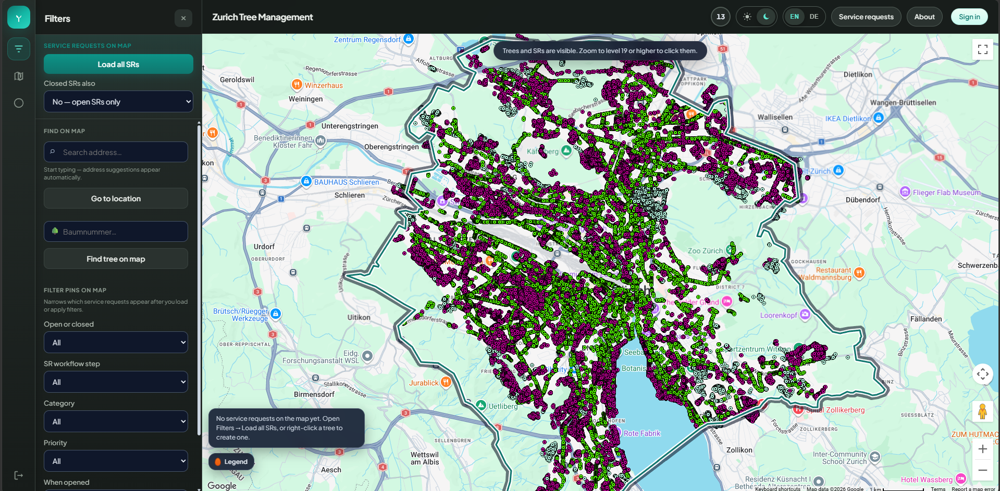
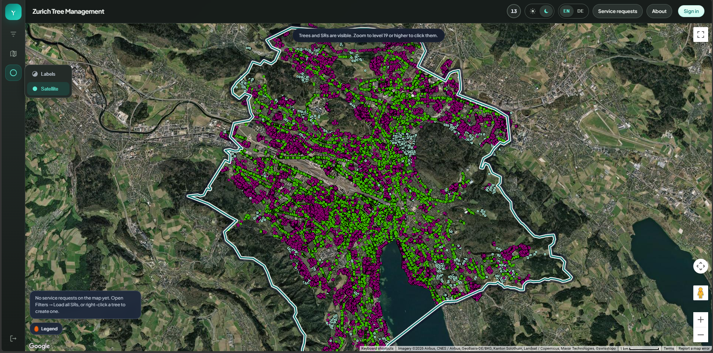
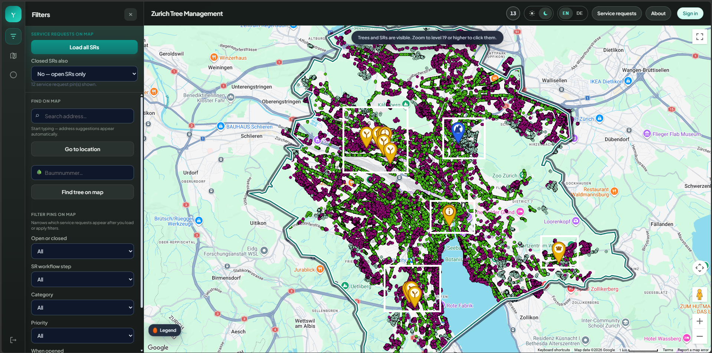
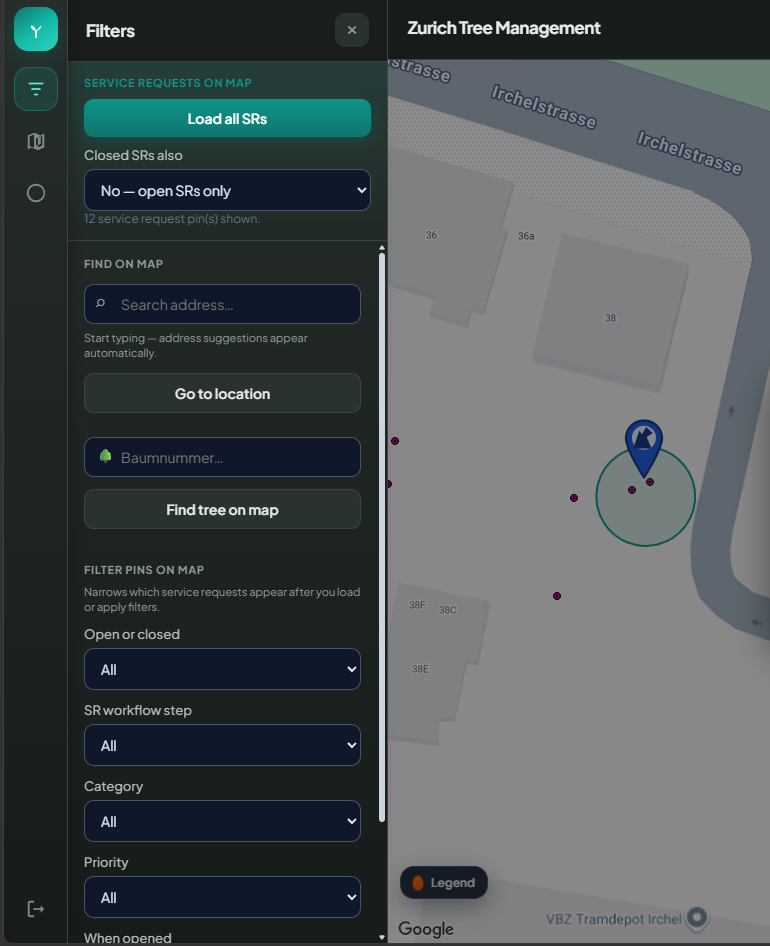
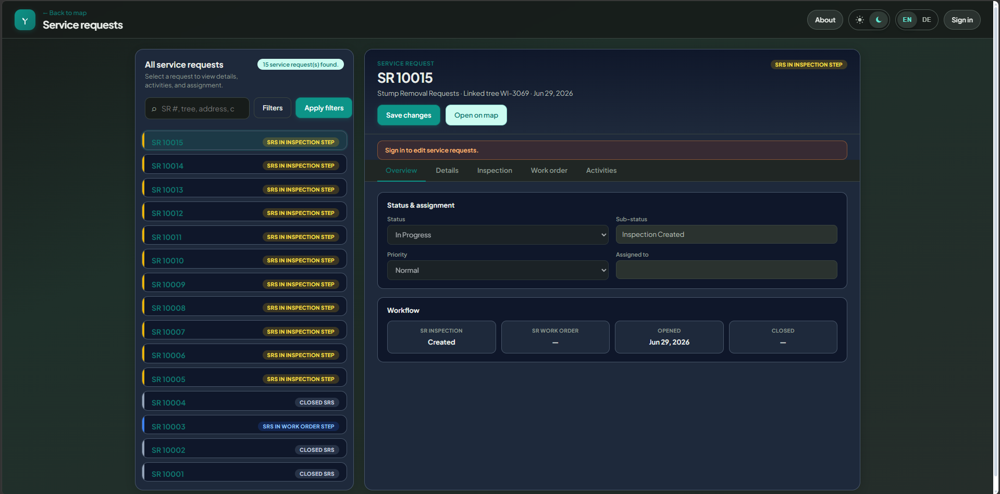
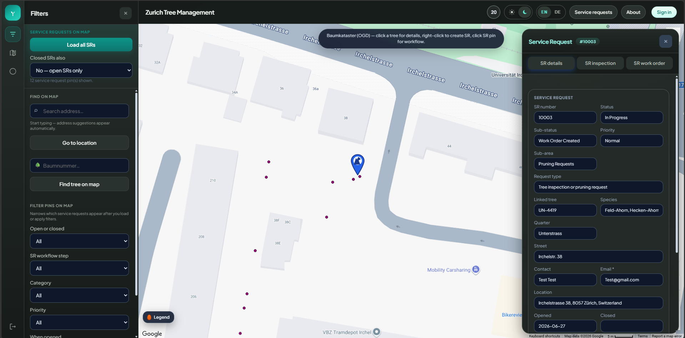
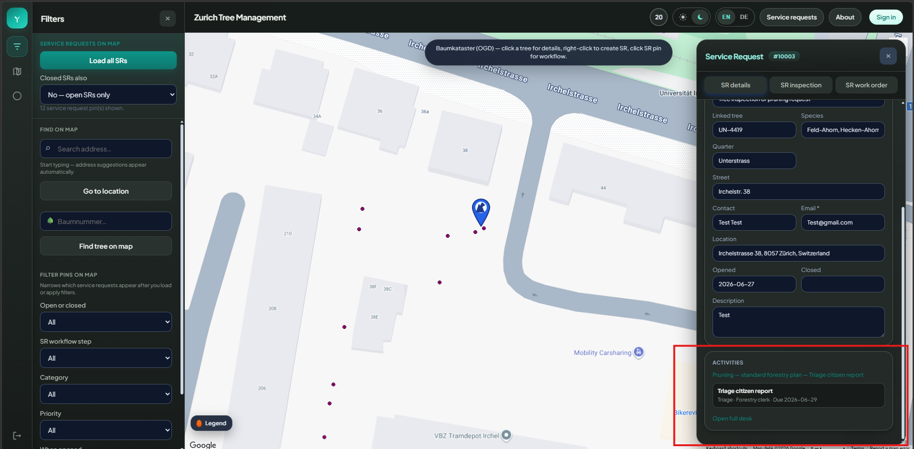
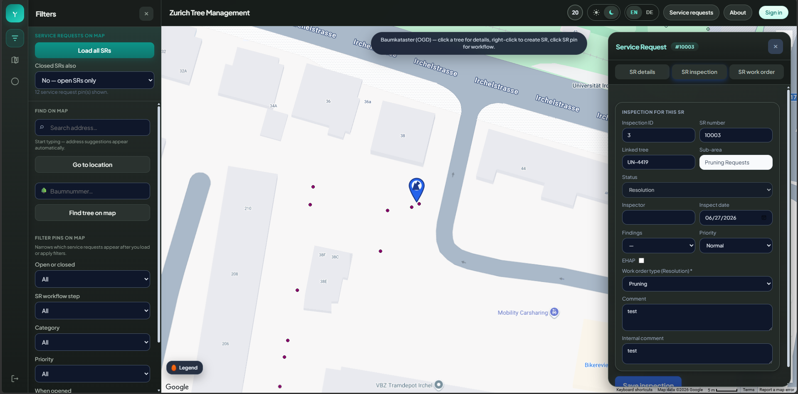

Independent research application
Zürich Trees (municipal SR research)
A design-science demonstrator that organises municipal tree governance around the service request — from map intake through inspection to closure, using City of Zürich open Baumkataster data. Separate from the Arborist practice inventory app.
4Workflow phases (SR → closed)
5Desk tabs per service request
EN / DEBilingual interface
Overview
What this project does
An ASP.NET Core demonstrator that treats the service request as the main case record. Citizens report tree issues on a map linked to OGD inventory; desk staff triage, inspect, and close cases — with map and desk sharing the same phase logic.
Research questions
What I set out to answer
- Does anchoring the interface on the SR number make the workflow easier to explain and navigate?
- Does map-based intake — linking a report to a Baumnummer from open cadastre data — reduce ambiguous locations compared with address-only forms?
- What benefits and risks appear when public OGD tree layers are combined with local case records in one application?
- What could a city build on top of this structure later — analytics, resident status views — even if this demonstrator does not implement those features?
Key findings
What the design study showed
- Organising tabs and search around the SR number matched how desk staff are expected to work; map and desk call the same phase logic with no duplicate definitions.
- Linking reports to Baumnummer and OGD attributes reduced free-text guesswork, though high zoom is required before individual trees are selectable.
- Combining public trees with private case rows worked for a demonstrator; deployment would need privacy controls, OGD attribution, and endpoint stability.
Application
Screenshots
Click any image to zoom in.









